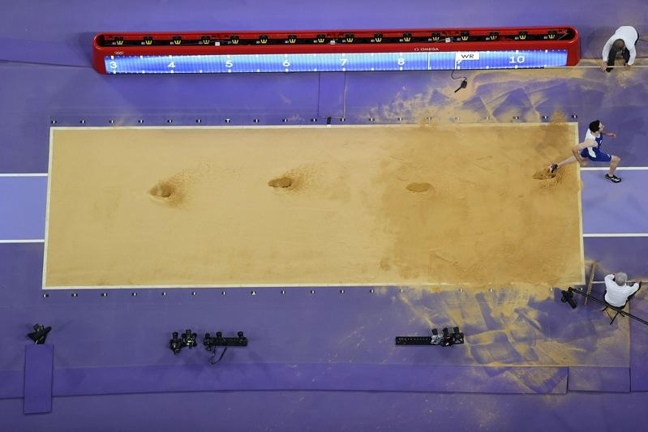
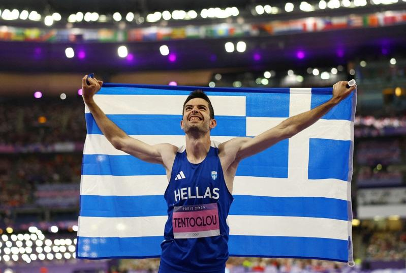

从传奇田径选手欧文斯（Jesse Owens）、贝蒙（Bob Beamon）到名将刘易士（Carl Lewis）等多位运动员，美国在夏季奥林匹克运动会男子跳远项目史上一向独领风骚，如今却没有任何美国选手进入本届奥运决赛。
美联社报导，此事非比寻常，因为在历届未受抵制的奥运中，美国先前唯一未进入男子跳远决赛是在2008年北京奥运。此外，美国不仅一向至少有一人晋级决赛，还长期在这项赛事称霸，抱走约7成5的金牌。
光是刘易士就在跳远项目连续赢得4金，分别在1984年洛杉矶奥运、1988年汉城（现名首尔）奥运、1992年巴塞隆纳奥运、1996年亚特兰大奥运。
在6日赛事中，希腊选手泰托尤（Miltiadis Tentoglou）达成奥运2连霸；牙买加选手皮诺克（Wayne Pinnock）镀银；意大利选手弗拉尼（Mattia Furlani）摘铜。
在头14届奥运中，美国人在男子跳远项目抱回13金，包括参加1936年柏林奥运的欧文斯。
贝蒙仍是奥运纪录保持人，他在1968年墨西哥市奥运创下8公尺90纪录，顺利夺金；鲍尔（Mike Powell）则于1991年以8公尺95刷新世界纪录。
然而在今年巴黎奥运，没有美国男子选手晋级决赛，美国的3名参赛者都未能通过本月4日的资格赛。
有人在社群媒体上询问刘易士的看法，他以一张GIF图回复，图上写着「无话可说」。

巴黎奥运热话题
- 乒乓／台湾男团不敌日本止步8强 庄智渊奥运之旅结束
- 法撑竿跳选手下体打落横杆出局 引来色情网站开价
- 全红婵丑拖鞋、黄雨婷发夹卖翻 有商家2天接60万个订单
- 日本羽球女神红了 志田千阳被挖角进演艺圈
- 「美到像AI」匈牙利21岁女剑客脱下面罩惊艳全场